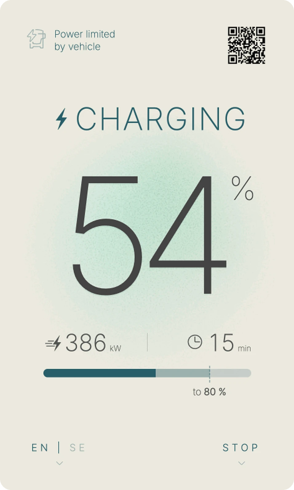
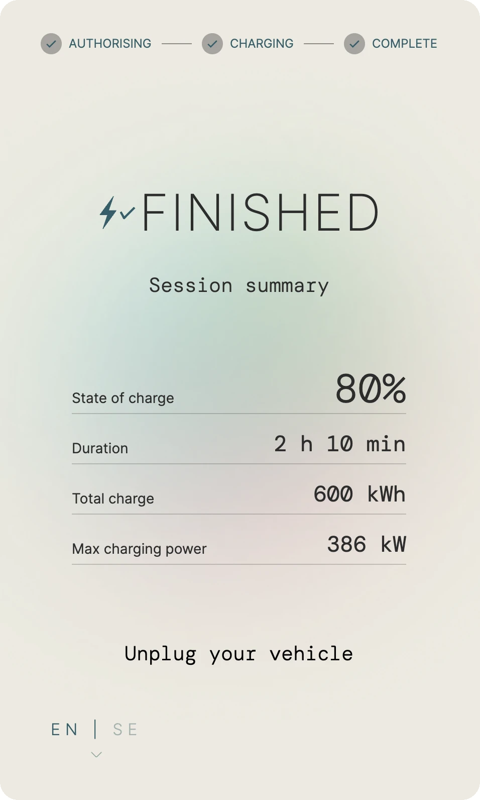

The Experience
Drivers could follow a charging session on the charger or on their phone. I worked on how the display, buttons, and LED strip fit together, including button placement and how the LEDs and screens showed each charging state.

Overview
This project focused on making heavy-truck charging easier to understand and use. The experience brought together the charger display, its physical controls and LED strip, and a mobile view of the charging session.
The Experience
Drivers could follow a charging session on the charger or on their phone. I worked on how the display, buttons, and LED strip fit together, including button placement and how the LEDs and screens showed each charging state.
My Approach
I started by looking at the charging journey and what drivers might need or find frustrating. I also helped shape the visual direction by bringing stakeholder ideas together with my UX/UI experience. User testing and feedback helped the team refine the interface.



A companion view
The supplied mobile visual presents charging progress and session details in a handheld context.